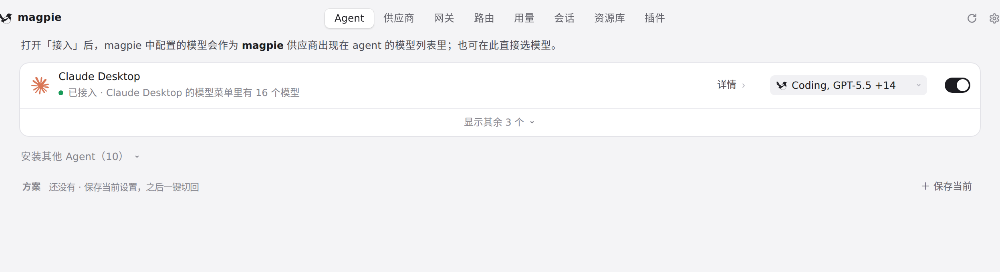
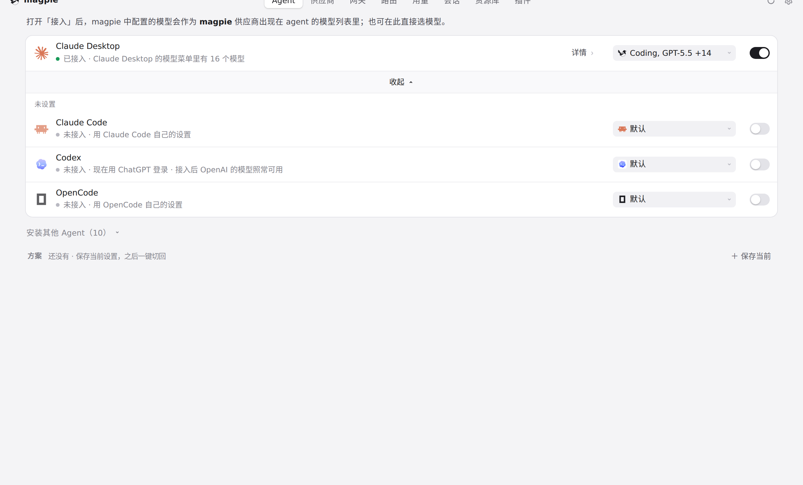
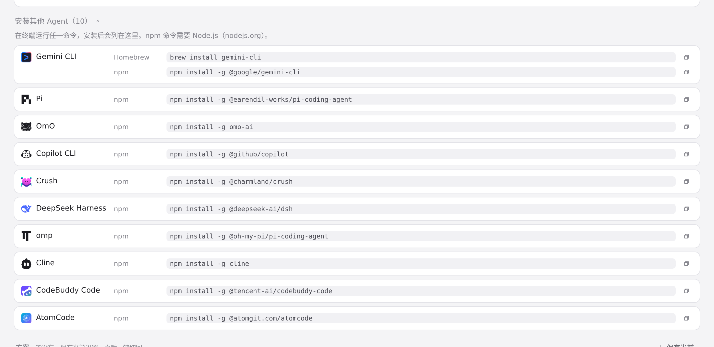

#1233 界面预览
commit 75a2869 · 回到 PR · Agents 列表里新增了 omp 的命名配置档行：~/.omp/profiles 下每个合法配置档都是独立 Agent（Windows 上是「omp · <名称>」，WSL 里是「omp · <名称> · WSL <发行版>」），各自拥有模型、task、smol/slow、thinking 等设置与接入状态、断开；同时 app.js 对 API 路径段做了 URL 编码，避免 omp#work 在 # 处被截断而写错行。
红线是鼠标走过的轨迹，红色圆环是一次点击；底部文字是这一步在做什么。空格暂停，← → 逐段查看。

Agent 列表：omp 行所在的位置 · Agent 标签页的列表，改动新增的「omp · <名称>」行会出现在这里

Agent 列表：omp 行所在的位置 · 展开后的 Agent 列表，看 omp 行旁边有没有配置档行

Agent 列表：omp 行所在的位置 · 未安装的 Agent 列表，omp 不在已检测到的行里时在这里